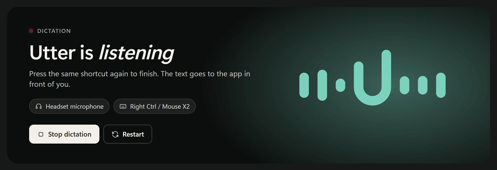
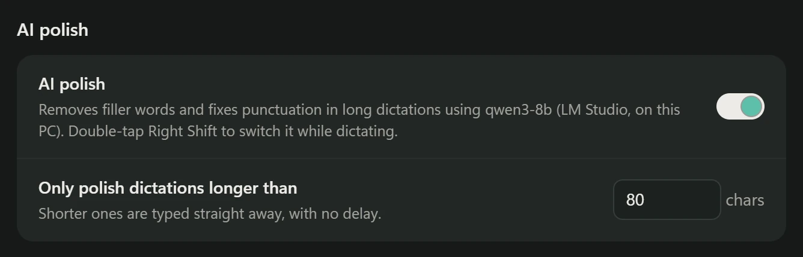
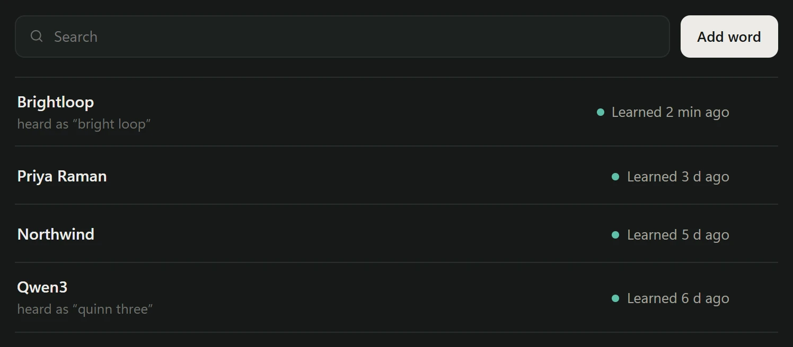
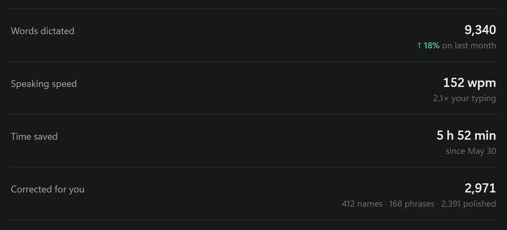
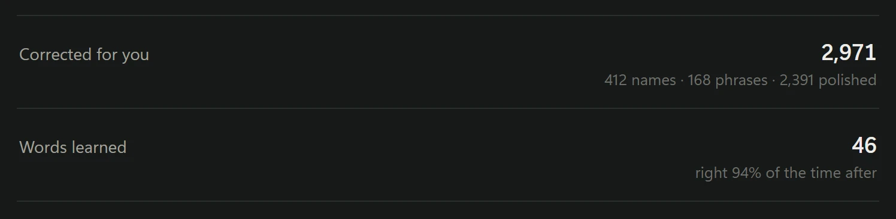
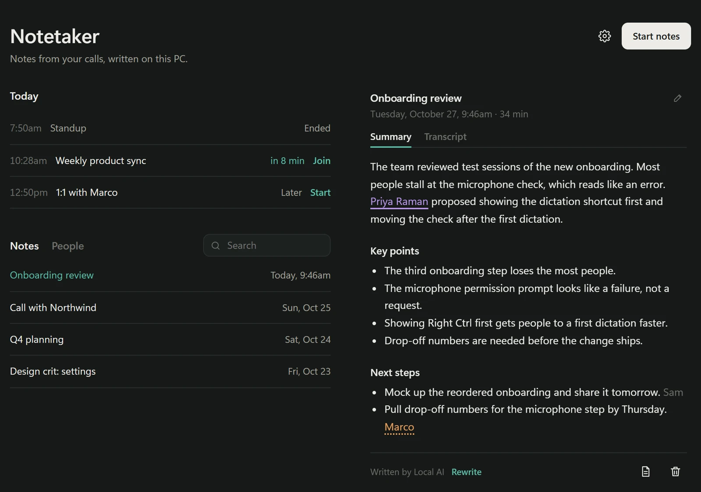
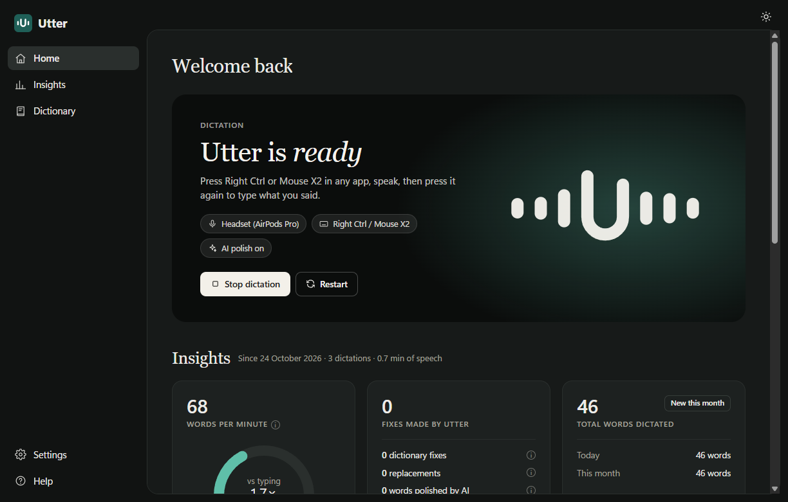

Dictate into anything
Press Right Ctrl or your mouse's side button, talk, press again. Your words are typed into whatever has focus. A small pill at the bottom of the screen shows when Utter is listening.

Introducing
Press a key, speak, and clean text lands wherever you're typing. Private dictation that runs entirely on your Windows PC.
Message to the team
Ready
Hold Space to talk Press and hold the wave to talk · it plays on its own too
Press Right Ctrl or your mouse's side button, talk, press again. Your words are typed into whatever has focus. A small pill at the bottom of the screen shows when Utter is listening.

"Um", "uh" and false starts disappear. With a local model in LM Studio or Ollama, AI polish also keeps your last self-correction: Friday, no wait, Thursday.

Names, brands and jargon live in your dictionary. When you correct a misheard name right after dictating, Utter notices the edit and adds it, so bright loop Brightloop only happens once.

One window shows whether Utter is listening, which microphone it uses, every fix it made, how fast you speak and where you dictate. Every switch is a toggle.

Windows 10 or 11, 64-bit. Setup downloads about 1.5 GB, mostly the speech model. A graphics card makes it faster but is not required.
Recommended · one prompt
Paste this into Claude Code, Codex or any agent that can run commands on your PC. It downloads everything, sets Utter up, and tells you what passed.
Install Utter on this Windows PC. Follow https://github.com/sz-747/utter-public/blob/main/INSTALL.md step by step: clone the repo, set up the Python environment, download the speech model, and create the shortcuts. Ask me before anything that needs admin rights. Finish with the checks at the end of the guide and tell me what passed.
Or download
The latest release as a zip. Setup follows INSTALL.md inside it.
Download utter-windows.zipFree and open source under the MIT license. What's new


